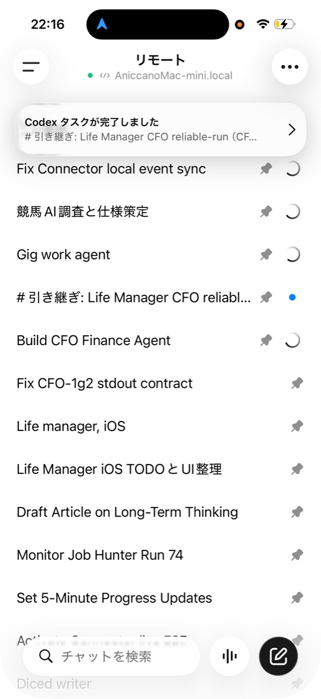
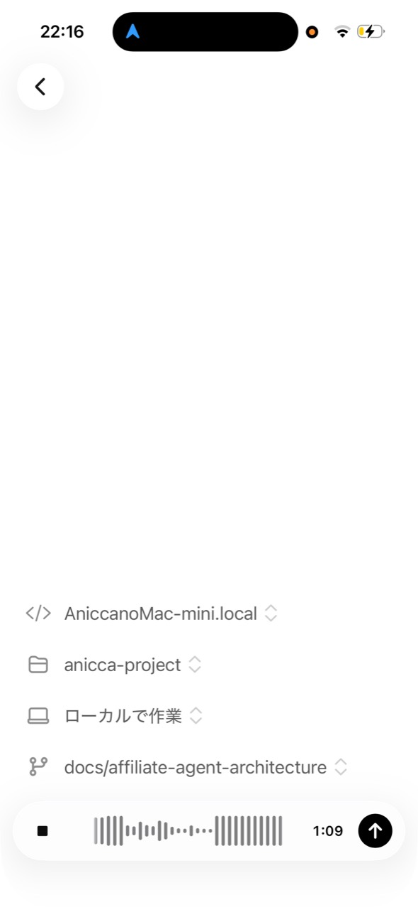

For a long time, starting development meant performing a ritual: sit at a desk, open the computer, find the right terminal, reconstruct the context, and only then begin. Remote made that ritual smaller.
The moment I wanted to explain at a Codex event
I talked about this feeling at a Codex event in Tokyo. ChatGPT's Remote feature lets me access supported Codex work running on my Mac from the ChatGPT mobile app.
From the phone, I can check an active session, send the next instruction, answer a question, approve an action, and review what the agent found. The execution environment stays on the Mac. The person making decisions can move.

This is not quite the same as shrinking a desktop screen into a remote desktop window. Codex keeps the project context and works through files, commands, and tests. I join the loop from a different place and decide what should happen next.
What does “building from an iPhone” actually mean?
I want to be precise here. The iPhone is not magically executing the code by itself. In practice, the setup has three parts:
- The ChatGPT iOS app
- A host environment where Codex runs, such as a Mac
- Remote access connecting the mobile app to that host
On the host, Codex reads the repository, changes code, runs tests, and executes commands. The iPhone becomes the place for direction, clarification, approval, and review. That is the useful meaning of “iPhone-first development”: not that compute disappears, but that the main human interface to development can become mobile.

Voice input removes the final barrier
The most compelling combination for me is Remote plus voice input. I tap the microphone and say what I need.
“Fix the spacing on this screen.”
“Check the test result and investigate the failure.”
“When this session finishes, move on to the next one.”
Before this, I would open the computer, find the terminal, locate the active session, reconstruct what was happening, and type the instruction. With voice, the idea can become an actionable request almost immediately.
At home, between tasks, or while spending time with family, I can return a small decision without pretending I have another uninterrupted afternoon. I am still responsible for the decisions. I just do not have to be physically seated at the machine for every one of them.
There is an important safety boundary: looking at a phone while walking is dangerous. Voice can reduce screen time, but it does not remove the need to stop somewhere safe for important decisions and reviews.
When the activation energy drops, I build more often
The biggest change has not been a benchmark number. It is the weight of a single interaction. A small idea that would not justify opening a laptop can still become a useful request from my phone:
- Clarify a specification
- Investigate a bug
- Check a test result
- Organize the next tasks
- Review progress across several sessions
When small decisions can be made where they occur, the work is less likely to stall. I come back to the project more often.
It is not quite that I suddenly have ten times more time to code. The better description is that the friction before coding is lower. That difference matters. A project can move forward through several small returns instead of waiting for one perfect block of desk time.
The future of development is not only in front of a screen
For decades, we have imagined software development as a person sitting at a desk, looking at a screen, and typing on a keyboard.
As coding agents become able to read a project, make changes, run tests, and report results, the human role starts to shift:
The agent moves through implementation and verification.
The human reviews the result and chooses the next direction.
Remote lets me participate in that loop from an iPhone. This does not mean I never need a screen. Important changes still deserve a careful review. Voice alone is not a safe replacement for seeing the diff, reading the result, and understanding the consequence.
But it does mean the doorway into development can be a sentence spoken at the moment an idea appears. That is a meaningful change in the relationship between a person and a project.
What I learned
1. Reduce friction before questioning talent
There were times when I thought I could not build because I lacked discipline or talent. Sometimes the real problem was that the first ten minutes were too heavy. Remote does not give me talent. It lowers the cost of beginning.
2. Always connected does not mean always working
The point is not to code every minute. The point is to be able to return to the work when a decision is needed. A short check-in can prevent a long period of silent drift.
3. Human review is part of the design
The best version is not “let the AI do everything.” It is a loop where the agent can carry the implementation forward while the human remains responsible for direction, permissions, and important reviews.
Conclusion
ChatGPT Remote changed more than my typing setup. It challenged the assumption that software development begins only when I sit down at a computer.
I can speak from an iPhone, check the live state of work on my Mac, and go deep on the screen when the change deserves it. The machine stays where it is. The human gets more freedom about where to participate.
One person, one phone, and an AI coding agent are not a replacement for judgment. But they are a new, practical shape for a small team. An idea that used to wait for the perfect desk session can now take its first step while life is still happening.
Sources
OpenAI release notes: Codex remote access from the ChatGPT mobile app
Japanese published version: note.com/anicca123